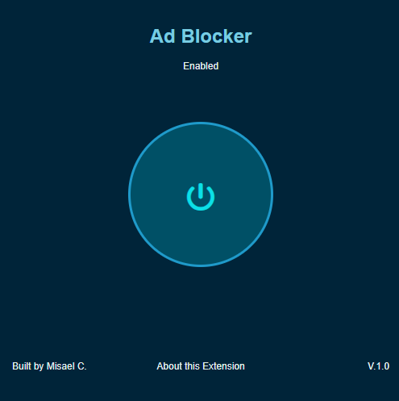
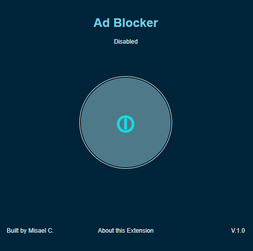
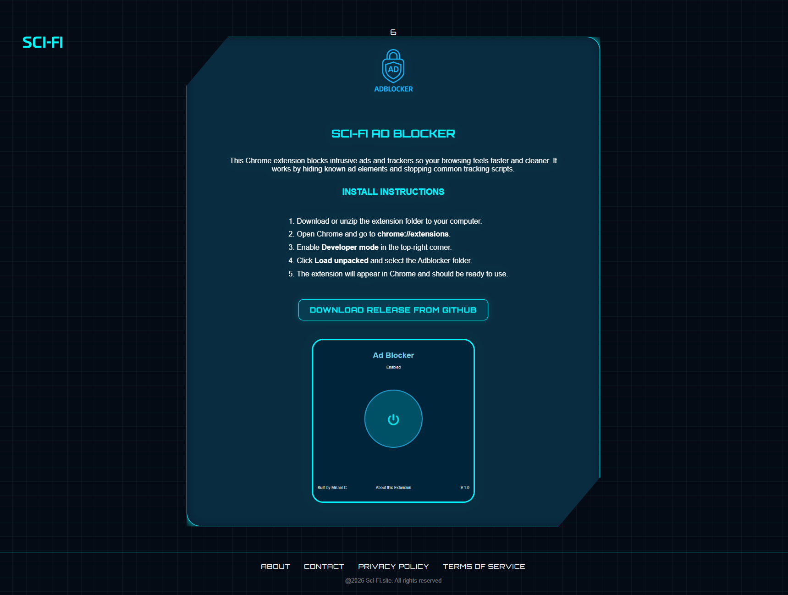
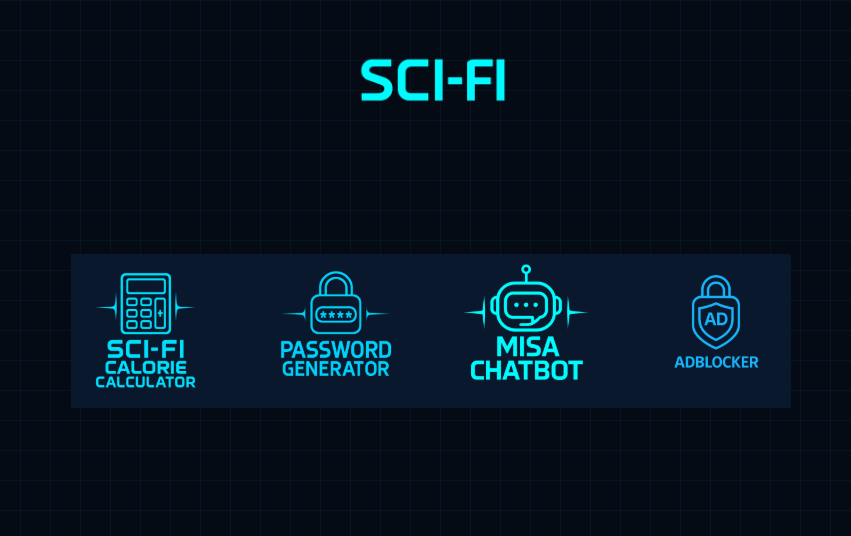

6. Ad Blocker

-
1. What does the tool do?
Ad Blocker is a lightweight Chrome extension that removes visual ad elements from websites, creating a distraction-free browsing experience. Unlike traditional ad blockers that block requests at the network level, this extension hides ad containers after they load. That keeps websites functional while removing the visual clutter.
-
2. Why I built it:
I use Oxford Dictionary frequently while studying, and the ads on the site were often distracting and disruptive. I wanted a cleaner browsing experience without breaking the website itself. When I realized that many popular ad blockers either had paywalls or triggered anti-adblock warnings on Oxford’s site, I decided to build my own. This project also fit naturally into my broader goal of building practical tools for my personal website, sci-fi.site.
-
3. How it works:
- For the user:
- One-click toggle: Click the extension icon to open a popup with a large power button. The button shows the current status and changes color depending on whether the blocker is enabled.
- Persistent state: The toggle preference is saved locally, so it remembers the user’s choice across sessions.
- Silent operation: The extension works across most websites, except on platforms like YouTube or Gemini where the experience should remain intact.
- Technical Architecture & Orchestration:
- manifest.json: The extension’s configuration file. It specifies permissions, defines the popup UI, registers content scripts, and excludes sites where the blocker should remain inactive.
- content.js: This is the main logic of the extension. It reads the saved enabled/disabled state from
chrome.storage.local, scans the DOM for ad-like elements, and hides them by toggling a CSS class. - content.css: This file contains the CSS rules that actually hide the selected elements when the extension is active.
- popup.html / popup.js / popup.css: These files control the popup interface and allow the user to turn the blocker on and off.
- For the user:
-
4. Technical Challenges:
-
Anti-adblock Detection (The Oxford Dictionary Problem)
The problem: Oxford Dictionary and similar sites use anti-adblock scripts that detect when requests are blocked or ads fail to render. Early network-blocking approaches triggered these warnings and disrupted the experience.
The solution: Instead of blocking ad requests, I shifted to a post-load hiding strategy. The extension allows ad elements to load normally, then hides them through CSS and DOM manipulation. From the server’s perspective, the ads still load, but the user does not see them.// hideElement checks for ad-like attributes and hides the wrapper const hideElement = (el) => { let text = `${el.id || ''} ${el.className || ''} ${el.getAttribute('role') || ''} ${el.getAttribute('aria-label') || ''}`.toLowerCase(); const adPattern = /(ad|advert|sponsor|promo|banner)/i; if (adPattern.test(text)) { const wrapper = el.closest('[class*="ad"], [id*="ad"]') || el; wrapper.classList.add('adblocker-hidden'); } }; -
Site Breakage on Ad-Dependent Platforms (The YouTube Problem)
The problem: On platforms like YouTube, ads are part of the service and blocking them can break the experience. The extension also risked hiding non-ad elements that used similar class names.
The solution: I addedexclude_matchesto the manifest so the extension stays inactive on specific sites where it would be disruptive."content_scripts": [ { "matches": ["<all_urls>"], "exclude_matches": [ "*://*.youtube.com/*", "*://youtube.com/*", "*://*.gemini.google.com/*" ], "css": ["content.css"], "js": ["content.js"] } ]
-
Anti-adblock Detection (The Oxford Dictionary Problem)
-
5. What I learned:
- Chrome Extension Architecture: I learned how to work with the manifest-driven model, content scripts, popup UI, and persistent storage.
- Detection vs. Blocking: I learned the difference between network-level ad blocking and DOM-level hiding, and why the latter is more reliable for this use case.
- MutationObserver and Dynamic Content: I learned how to respond to new content loading dynamically on modern websites.
- GitHub Workflows: I created a release pipeline, packaged the extension as a ZIP, and wrote documentation for users.
- Graceful Degradation: I learned how to design an extension that improves the experience without breaking the websites it runs on.
-
6. Screenshots



